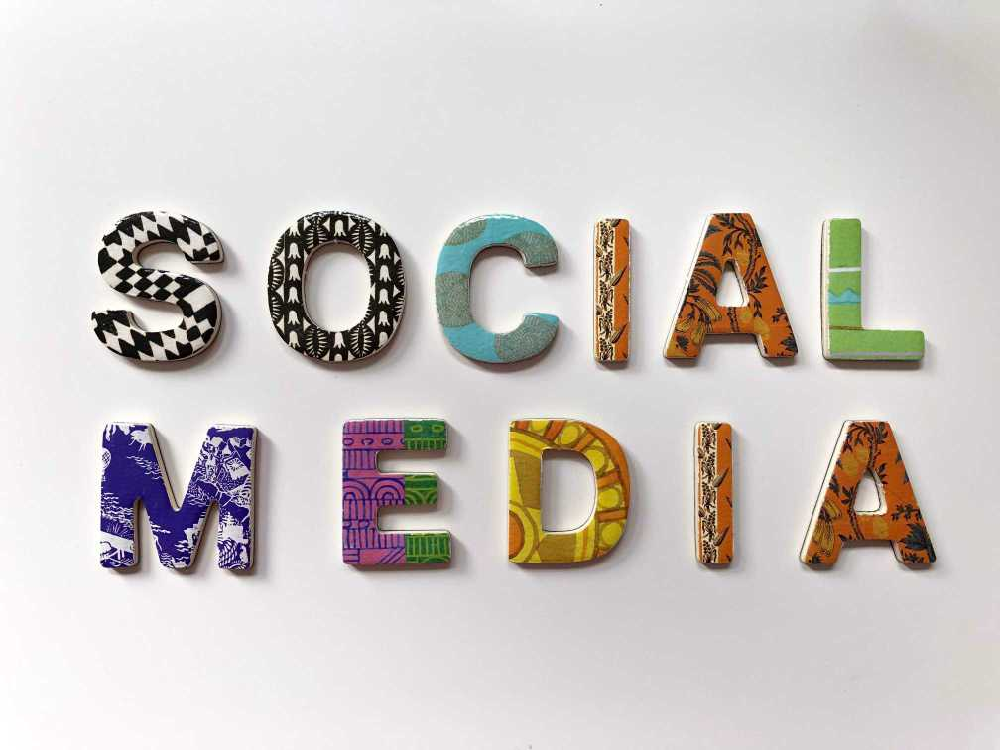
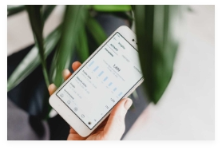

Liputan6.com, Jakarta pesatnya perkembangan tekhnologi sekarang ini, Media sosial menjadi salah satu kebutuhan Utama masyrakat.
Media sosial yang sebelumnya berfungsi sebagai media kommunikasi, kini menjadi media untuk ajang eksistensi.
Melihat antusiasme masyarakat Indonesia akan media sosial, terdapat beberapa keuntungan yang bias Anda manfaatkan. salah
satunya dengan menjadikan media sosial sebagai alat menciptakan lapangan pekerjaan.
Dikutip dari tunakita, Berikut beberapa jenis pekerjaan yang berhubungan dengan media sosial. Apakah perkejaan tersebut cocok
untuk para milenial yang serba kekinian?
1. Sosial Media Strategist

Tingginya angka pengguna media sosial yang cukup tinggi di Indonesia, Membuat pembisnis serta perusahaan memanfaatkanya
sebagai alat untuk melakukan bisnis, Tidak hanya perusahaan dalam negri saja lho, tetapi perusahaan multinasional bahkan luar negri
pun sudah menggunakan media sosial untuk memperluas jaringanya.
Maka dari itu, dibutuhkan sosial media strategist, untuk membantu perusahaan dalam membuat strategi pemasaran melalui media
sosial, Tugas yang harus dilakukan sosial media strategist ini, yaitu mengoptimalisasikan pengpunaan media sosial agar proses
pemasaran berjalan dengan baik.
2. Selegram

Punya followers banyak? Anda biasa coba jadi selebgram, lho selain mendaoatkan penghasilan, Anda juga bias ikut terkenal.
memang ini dsalah satu pekerjaan yang baru trend dikalangan muda karena terlihat kekinian dan menghasilkan. Syarat Utama
menjadi Selebgram adalah Anda diharuskan memounyai followers yang banyak
juga feeds yang menarik, Sehingga banyak endorsement yang datang.
Endorsement menjadi salah satu penghasilan yang kamu dapatkan. Anda bias kerjasama dengan brand-brand ternama. Seorang
selebgram bias menghasilkan belasan juta sekali postin, lho Menarik bukan?
3. Youtuber
Untuk Anda yang hobi bikin video dan punya ide-ide yang keren, Youtuber profesi yang tepat buat Anda, Dari segi penghasilan,
YouTuber Sangat menjanjikan sekali, Hanya bermodalkan kamera saja, Anda sudah bias menjadi YouTuber, lho.
Tetapi jadi YouTuber dituntut untuk membuat konten-konten yang kreatif dan video yang berkualitas bukan asal sekedar membuat
video saja, Kalau konten Anda menarik, Otomatis bisa mendapat banyak subscribers.
Bagi Anda yang masih bingung mencari pekerjaan, Semoga ulasan diatas bisa membantu dan menjadi referensi.